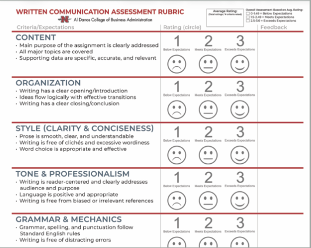

← Rubrics · Home · Committee agenda · Minutes · Full spec (Markdown) · BARS version (per-criterion behavioral anchors from JSON)
Short labels on buttons; open Competence scale (1–5) below for full definitions. See docs/Oral_Communication_Rubric_Electronic_Spec.md for pairing (self-report vs instructor), Canvas backup, and issues.
The Novice → Exceptional labels describe general competence on one shared scale across criteria. On this demo they are shown for illustrative purposes (layout, review, print-to-PDF); official wording and any program-specific rules remain in the approved rubric masters.
Program goal: At least 90% of students should meet each criterion at the Proficient level (3) or higher.
| # | Label | Description |
|---|---|---|
| 1 | Novice | Not competent. Lacks basic knowledge or skills. Requires constant supervision and significant guidance for simple tasks. |
| 2 | Learner | Little competence. Foundational knowledge; lacks practical experience. Routine tasks need frequent assistance. |
| 3 | Proficient | Competent. Works independently on standard tasks; solves common problems; meets expected requirements. |
| 4 | Advanced | Highly competent. Handles complex, non-routine situations; often a resource for others. |
| 5 | Exceptional | Expert/mastery. Recognized authority amongst peers; innovates, optimizes, mentors others. |
Overall summary (optional). Per-criterion comments are above. Production: stored with submission; visible per your transparency rules (student, AOL, Canvas copy).
Production workflow: student submits here + Canvas; instructor rates same student (pairable via pseudonym + course/term), saves here + Canvas backup. Artifact (video/slides) stored on institutional storage — link from record.
College written rubric screenshot (adapt oral dimensions and 5-pt scale as above).
